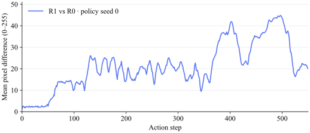
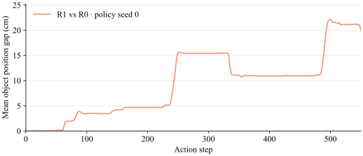

采样并构建场景
任务脚本采样物体位姿；环境基类处理桌面、背景、灯光等随机化。
环境负责场景，模型负责动作采样。
先区分这两条链，再解释同场景下的轨迹差异。
固定初态 → 多条可能轨迹 · 概念示意
任务脚本采样物体位姿；环境基类处理桌面、背景、灯光等随机化。
读取布局文件，创建物体并恢复位姿，完成稳定性检查与机器人初始化。
adapter 组织观测与动作；采样是否随机、RNG 如何推进，取决于具体模型实现。
rand_pose() 从位置范围和旋转范围采样；load_actors() 会拒绝距离过近或落在禁区的布局。即使采用 clean 配置，任务物体位置仍可以随机。
基类另外读取 domain_randomization：背景、杂物、桌高、灯光和头部相机扰动等。开关存在不等于当前配置已开启；random_embodiment 在本地仍标为 TODO。
初始化设置 NumPy、Torch seed；Python 的 random.seed 在这里被注释。固定 seed 还依赖配置、资产和随机调用顺序，不能只记录一个整数就宣称初态完全一致。
专家采集第二遍使用同一 seed 重建场景，消费第一遍缓存的规划轨迹并保存数据。这是专家轨迹回放，不是策略独立采样。
eval_cfg.seed → eval_seed 参与选择 Eval_Layout / benchmark / config / seed 目录。目录内任务 JSON 按数字后缀排序，枚举索引成为 layout_id。
这些布局索引又传入环境 reset(seed=env_seeds)，用于环境随机数初始化。它们不会自动成为另一个模型服务进程的策略 seed。
当前核实的是评测恢复链路。未定位到本 checkout 中完整的 datagen 布局采样保存入口，因此不把辅助随机函数当作已证实的生成流程。
不意味着。评测设置 replay，背景读取保存值；但房间、桌面若仍含 random 标志，或灯光 types 仍为列表，选择函数仍有采样分支。是否触发取决于实际 JSON。
恢复后还有物理步和 settling。同一 JSON 不等于完整仿真快照；比较前应验证 reset 完成后的物体、关节、指令和首帧观测。
以下只核实 Pi_05 / OpenPI，不能推断所有策略都有相同的采样方式。
Policy 默认从 jax.random.key(0) 开始，每次 infer 会 split 并推进内部 key。起始 seed 相同，不代表连续两次调用用的是相同噪声。
未提供 noise 时，模型通过 torch.normal() 生成噪声。这里使用的是模型服务进程的 RNG 状态。
默认 reset 仍清空观测窗口。本次新增 set_policy_seed()：显式设置后，每次 reset 都重新应用该 seed。仅支持独立服务、单环境串行实验。
此前混合了代码事实与设计建议；本次实验新增的能力另标“实验新增”。尤其是 trial_id，存在，但不是重复序号。
| 字段 | 状态 | 真实含义 / 扩展建议 | 依据 |
|---|---|---|---|
layout_id | 已有 | 排序后布局列表的枚举索引，不是文件名后缀或全局 ID。文件集合变化可能改变映射。 | |
scene_id | 建议 | 跨项目统一场景身份；不能把它写成 layout_id 的已有别名。 | 待设计 |
layout_hash | 实验新增 | 实验入口已记录 SHA-256；它不证明资产、实际初态或完整物理状态相同。 | trial recorder |
eval_seed | 已有 | 来自 eval_cfg.seed，参与选择保存布局目录。不是模型采样 seed。 | |
policy_seed | 实验新增 | 已接入 Pi_05 模型 RNG，并保存服务端确认值；不是全策略通用接口。 | |
trial_id | 已有 · 纠正 | 任务名 + ROBODOJO_RUN_ID，传给 ModelClient 的通信/运行标识；不是同场景第几次 rollout。 | |
repeat_id | 实验新增 | 实验入口另设重复序号，未改变现有 trial_id 的含义。 | trial recorder |
policy_id | 建议 | 模型、checkpoint 与输入输出配置的组合身份；现有 policy_name 等信息分散存在。 | 待汇总记录 |
核实范围：本地 RoboDojo 评测、RoboTwin 采集及 Pi_05 适配链路。这里的“建议”不宣称整个仓库不存在同名词。
Pi_05 deploy 逐个执行返回的 chunk，结束时退出。chunk 中更新观测不等于立即重新推理。
RoboDojo 执行层对夹爪值做裁剪；插值长度来自 obs_manager.collect_interval，关节动作先插值，再保持目标。采样频率有效时，collect_interval = 1 / (dt × collect_freq)；这两个已有量共同决定每个目标覆盖的物理步数。
接触和数值误差可能影响后续轨迹，但尚未证明它们是当前运行的分叉来源。
这些条件需要记录；不要求不同策略一律改成相同设置。若保留原生执行配置，比较的是整套策略系统表现；要归因到模型采样，就进一步控制其他条件。
同一初态、同一模型：先检查重复性，再改变策略采样。
同一初态、不同模型：记录各自适配与执行配置，再比较行为与得分。
标准评测续跑会跳过已完成的 layout；本次用独立实验入口、独立运行目录固定布局重复评测。下方实测区自动刷新，代码说明与测量结论分别展示。
返回整体流程 ↗RoboDojo · stack_blocks · layout 0 · Pi_05 / checkpoint 59999。单环境串行，policy_seed = [0, 0, 1, 2]。
正在读取实验状态…
| 重复 | policy_seed | 状态 | 动作步数 | 成功 | 最终分 / 100 | 首次获得阶段分 |
|---|
只比较 R0 与 R1：同一 layout 0、policy_seed = 0。将逐关节曲线合并为观测与物体运动两个指标；横轴是动作步，不是任务阶段。


差异可以增大，也可以回落。仅有一对同 seed 重复，且初始图像已有差异；这两条曲线用于观察分叉过程，不能证明“观测差异导致轨迹差异”，也不是任务质量分数。查看逐步数据 ↗
加载已录制视频的采样帧，四次实验并排查看。每 25 个视频帧取一帧，并保留末帧；视频帧号不等于动作步数。
在真实闭环评测中记录初始观测、实际物体与关节状态、已执行目标动作和阶段分。差异曲线分别来自录制图像和实际方块位置，不是末端空间路径。动作步对齐只比较两次 rollout 的共同前缀。
初态最大差值混合位置、四元数和关节数值，仅用于检查一致性；关节 RMSE 也不作为综合质量评分。小样本不能估计总体成功率。
下载结果摘要 JSON ↗公开汇报快照 · 2026-10-14 · 结果不会随本地实验自动更新